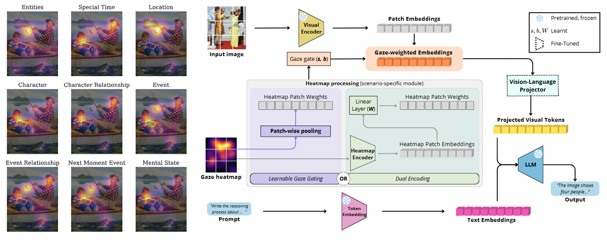

Left: Examples of gaze heatmaps for different reasoning dimensions. Right: Proposed framework of gaze integration strategies within the models' architectures: i) Learnable Gaze Gating (LGG), in violet, coupled with projector fine-tuning; and ii) Dual Encoding (DE), in green, encoding gaze heatmaps into spatial embeddings to dynamically condition visual representations.